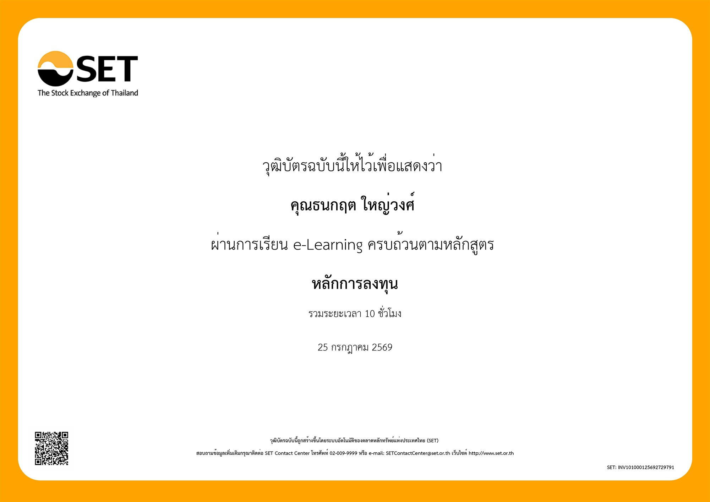

UIPATH / RPA / EXCEL
จาก PDF สู่ Excel ด้วย UiPath
คลิปสาธิต 33 วินาที แสดงลำดับงานที่อ่านข้อความจาก PDF ค้นหาข้อมูลตามรูปแบบ แล้ววนเขียนค่าที่พบลงในเซลล์ Excel
เปิดไฟล์วิดีโอ ↗I study Information Technology.
I build workflows with UiPath.
My latest project moves data from PDF to Excel.
... /work experience ...
IN PROGRESS
Sripatum University
–
GPA 3.88
 AI Ready ASEANASEAN Foundation
AI Ready ASEANASEAN Foundation
หลักการลงทุนตลาดหลักทรัพย์แห่งประเทศไทย (SET) AI for Everyone · ปัญญาประดิษฐ์เพื่ออนาคตของทุกคนTDGA / DGA
AI for Everyone · ปัญญาประดิษฐ์เพื่ออนาคตของทุกคนTDGA / DGAIT FUNDAMENTALS
ฝึกอ่านค่า CPU และหน่วยความจำใน Task Manager เมื่อเครื่องช้า และไล่ตรวจสายหรือแหล่งสัญญาณเมื่อหน้าจอไม่แสดงภาพ
เมื่อ Wi-Fi ต่อได้แต่เปิดเว็บไม่ได้ ลองเทียบอีกเครื่องในเครือข่ายเดียวกัน แล้วทดสอบหลายเว็บไซต์เพื่อแยกว่าอาการอยู่ที่เครื่อง เว็บไซต์ หรือเครือข่าย
ใช้ HTML จัดเนื้อหา CSS ทำเลย์เอาต์และแอนิเมชัน และ JavaScript รับการกดปุ่มหรือวาดภาพผ่าน Canvas
เขียนสคริปต์ให้บริการของ Google ทำงานร่วมกัน เช่น อ่านข้อมูลจากชีตแล้วสร้างรายงาน
ใช้สคริปต์อ่านไฟล์ จัดรูปแบบข้อมูล และลดขั้นตอนที่ต้องทำซ้ำ
พัฒนาเว็บด้วย Python โดยแยกส่วนจัดการข้อมูล หน้าแสดงผล และเส้นทางของเว็บ
เก็บข้อมูลในไฟล์ฐานข้อมูลเดียว และใช้ SQL ค้นหาหรือสรุปรายการ
กำหนดโครงสร้างหน้าเว็บ เช่น หัวข้อ รูปภาพ ลิงก์ และวิดีโอ
จัดวางองค์ประกอบและปรับขนาดการ์ดให้พอดีกับจอมือถือและคอมพิวเตอร์
เพิ่มการโต้ตอบบนเว็บ เช่น รับค่าจากฟอร์มแล้วอัปเดตสิ่งที่แสดงบนหน้าจอ
จัดหน้าเว็บด้วยระบบกริดและส่วนประกอบสำเร็จรูป เช่น เมนูและปุ่ม
ติดตามประวัติการแก้ไขโค้ดและเผยแพร่เว็บพอร์ตผ่าน GitHub Pages
จัดข้อมูลเป็นตาราง ใช้สูตรคำนวณ และกรองรายการเพื่อทำรายงาน
เชื่อมข้อมูลระหว่างงาน เช่น การจัดซื้อ สินค้าคงคลัง และบัญชี
เชื่อมข้อมูลระหว่างโปรแกรม เช่น ดึงสถานะคำสั่งซื้อจากระบบร้านค้ามาแสดงในแดชบอร์ด
ให้ซอฟต์แวร์ทำงานซ้ำตามขั้นตอนบนหน้าจอ เช่น นำข้อมูลจากตารางไปกรอกในแบบฟอร์มทีละรายการ
UIPATH / RPA / EXCEL
คลิปสาธิต 33 วินาที แสดงลำดับงานที่อ่านข้อความจาก PDF ค้นหาข้อมูลตามรูปแบบ แล้ววนเขียนค่าที่พบลงในเซลล์ Excel
เปิดไฟล์วิดีโอ ↗